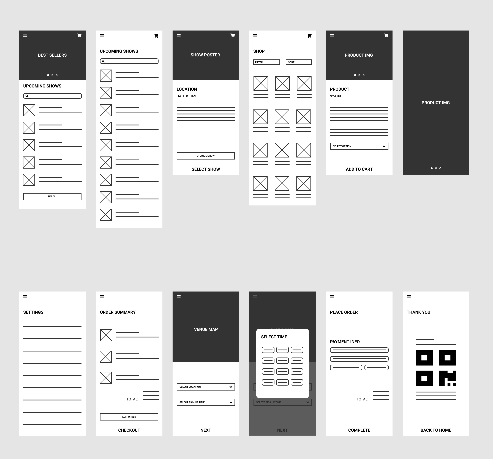

Streamlining the concert merchandise booth experience.
UX Design / 2022 / Personal Project

Buying merchandise at a concert venue takes a lot of time and energy, with no equal alternative.
Buying merch at concerts can be a painstaking experience. You want the exclusive products, but do you go when you get there, so you get first pick and things don't sell out? Do you take a break in the middle of the show and miss part of the set? Or do you go at the end when you're exhausted and wait in a super long line?
None of those sound like great options, so I designed a concert merch app for a (fictional) rap group, K$, allowing fans to pre-order merch for pickup and view product availability in advance. My goal is to streamline the concert experience:
Maximise time spent at the show, and minimise time spent in long lines.
Who is this for?
I conducted interviews in order to better understand what the target group for this product most needs and how to best start designing for that. The primary user group identified through my research was young adults (18-24) who are avid concert-goers and want a simplified merch-buying process to support their favourite artists.
The surveyed user group confirmed initial assumptions about the types of customers this app would mainly service, but also revealed another user group that includes families with kids. For both groups, research revealed the current lack of digital pre-ordering options lengthens the purchasing process.
Primary pain points: Time & Accessibility
Users want to get through the process as efficiently as possible. However, there is no way to view all available items until the front of the line, and products are targeted to those with existing familiarity.


Is anyone else doing this?
As a merchandising app, some of the necessary competitors to analyse included eBay and Redbubble. None were direct competitors, but were still in the same market of selling musicians' merchandise.
The overarching trend was that these apps generally catered to a vast user group, and as such, their products are often not divided into specific or easily navigable categories.
Developing a design
A simple and straightforward process was a key user need to address in the designs. I decided to keep the home screen simple to save users time spent on navigation; each app page prioritises the upcoming shows and available products.
Does this tackle user pain points sufficiently?
Following lo-fi prototyping, I created a usability study with 12 questions and tasks for participants to complete. A quick affinity diagram revealed these findings:
- ✽ Users want the selected show to be visible throughout the flow.
- ✽ Users want a more intuitive checkout process.
Creating the visual moodboard
K$'s dark and muted colour scheme was developed with the image of being at a concert in mind–you could sneak the app open in the dark and no one would know! The yellow accent colour is intended to make the app feel a little warmer and more inviting.

Iterating the design
After creating a mid-fi prototype, I conducted a second usability test before this final iteration.

What did I learn?
✽ As someone who loves going to concerts and collecting tour merch, this was an exciting project to work on. This was my first time going through the full process from ideation, to testing & research, to designing, and it was definitely an incredibly useful skill set to develop
✽ The emphasis on user research also helped me learn to really focus on keeping the user at the forefront of my work (as is the point of UX design, but with personal projects, it's easy to get lost in your own ideas), and it's something I know will help me in future work.
What's next?
✽ Conducting more usability testing would be helpful to ensure all pain points have been addressed and there are no new user needs.
✽ I also think it would be interesting to try to adapt it for venues or labels instead of specific artists' shows!